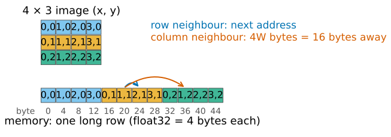
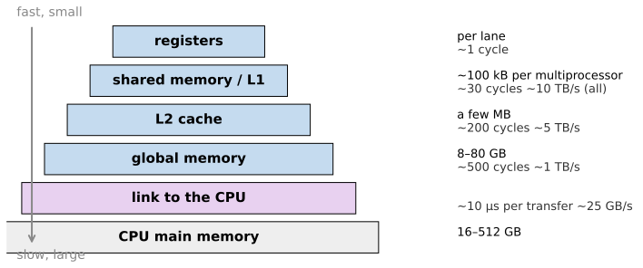
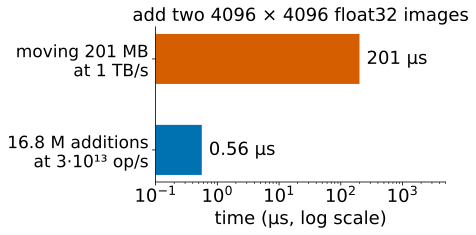
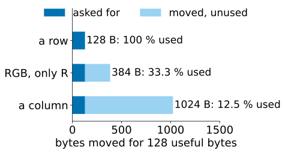
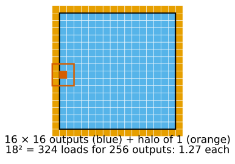
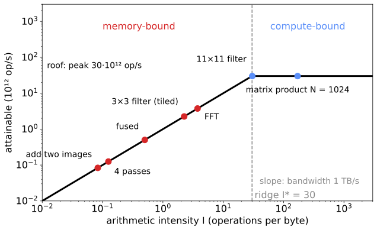
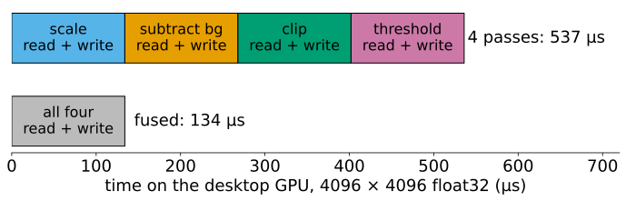
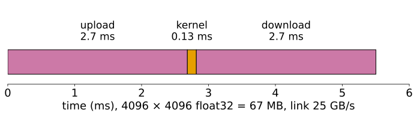

A row-major W \times H float32 image: pixel (x, y) is at byte 4(yW + x) (plus row padding: the stride).
Interleaved RGB stores RGBRGB…; planar stores all R, then all G, then all B.
Neighbours along a row are neighbours in memory; neighbours along a column are 4W bytes apart.

Today this layout decides how fast a GPU can read the image.
The memory hierarchy

Fast memory is small and near the lanes; big memory is far and slow. The link to the CPU is 40 times slower than the GPU’s own memory.
Most image code is memory-bound
Add two float32 images: per pixel, read 8 bytes, write 4, do one addition.
At 1 TB/s: 10^{12}/12 = 8.3 \cdot 10^{10} additions per second.
The lanes could do 3 \cdot 10^{13}: the addition uses 0.28 % of the arithmetic.
The GPU spends almost all its time waiting for bytes. Arithmetic is nearly free; moving data is not.

Element-wise operations, thresholds, colour conversions, small filters: all limited by bandwidth. The questions become: how many bytes does an operation move, and does it move them efficiently?
Coalescing: a warp reads in lines
Memory delivers whole lines of 128 bytes (32 floats), in four 32-byte sectors.
The 32 lanes read 32 consecutive floats (a row): one line, all of it used. Coalesced: 100 %.
They read a column of a 1024-wide image: 32 different lines, one sector each, 4 of 32 bytes used: 12.5 %.
Interleaved RGB, reading only R: every third float, 3 lines for 128 useful bytes: 33 %. Planar R: 100 %.
So: map neighbouring threads to neighbouring pixels along rows; prefer planar channels; do transposes through fast shared memory in tiles.

Try it: coalescing
Tiling a stencil with a halo
A 3 × 3 filter reads 9 inputs per output. Read them all from global memory and each input pixel is fetched 9 times.
Tiles: a block computing a 16 × 16 output tile first loads the 18 × 18 input tile (the tile plus a halo of 1 pixel) into shared memory, once. Every thread then reads its 9 neighbours from there.
Global reads per output pixel: 18^2/16^2 = 1.27 instead of 9.
A k \times k kernel needs a halo of (k-1)/2: a 31 × 31 kernel with 8 × 8 tiles loads 38^2/8^2 = 22.6 pixels per output: the halo dominates small tiles; with 32 × 32 tiles 3.75.
(The texture cache of GPU textures does part of this automatically, and gives bilinear interpolation for free.)

Try it: tiles and halos
Arithmetic intensity
IntensityI = operations per byte moved to and from global memory (float32, 4 bytes per value).
operation (per pixel)
operations
bytes
I
add two images
1
12
0.083
multiply by a constant, in place
1
8
0.125
3 × 3 filter, every tap from memory
18
40
0.45
3 × 3 filter, ideal reuse (tiles)
18
8
2.25
k \times k filter, ideal reuse
2k^2
8
k^2/4
matrix product of N \times N matrices (total)
2N^3
12N^2
N/6
A 2D FFT of n points does about 5n\log_2 n operations; with two passes through memory (rows, then columns) I \approx 0.16\log_2 n: about 4 for a 4096 × 4096 image. Memory-bound too.
The math: intensity of a k \times k stencil
Work per output pixel: k^2 multiplications and k^2 additions: W = 2k^2.
Traffic without reuse: k^2 reads and one write of 4 bytes: Q = 4(k^2 + 1), so I \to 1/2 for large k.
With T \times T output tiles and a halo: (T + k - 1)^2 reads per tile, T^2 writes: Q = 4\left(\frac{(T+k-1)^2}{T^2} + 1\right) \xrightarrow{T\to\infty} 8, \qquad I = \frac{2k^2}{8} = \frac{k^2}{4}.
Separable: two 1D passes of 2k operations each, each pass reading and writing 8 bytes: I = 4k/16 = k/4. Fewer operations, lower intensity: faster as long as it is memory-bound.
Matrix product: 2N^3 operations on three N \times N float32 matrices, 12N^2 bytes: I = N/6.
The roofline

Attainable rate = the lower of two lines: bandwidth × intensity (slanted) and the peak (flat). They meet at the ridgeI^* = \text{peak}/\text{bandwidth} = 30 for the desktop preset.
Left of the ridge: memory-bound. Speed up by moving fewer bytes: fuse steps, use float16, reuse tiles.
Right of the ridge: compute-bound. Speed up by doing less arithmetic (separable filters, the FFT for big kernels).
A k \times k filter reaches the ridge at k^2/4 = 30: k \approx 11.
The math: the roofline
Peak arithmetic \pi (operations/s), bandwidth \beta (bytes/s). A kernel with work W and traffic Q needs at least W/\pi for the arithmetic and Q/\beta for the bytes; with both overlapped, t = \max\!\Big(\frac{W}{\pi}, \frac{Q}{\beta}\Big), \qquad P = \frac{W}{t} = \min(\pi,\ \beta I), \qquad I = \frac{W}{Q}.
Ridge: \pi = \beta I^*, so I^* = \pi/\beta.
Desktop preset: \pi = 3\cdot10^{13}, \beta = 10^{12}: I^* = 30. Add two 4096 × 4096 images: Q = 12 \cdot 4096^2 = 201 MB, t = 201\ \mus; the arithmetic alone would take 0.56\ \mus.
Fusing: move the image once
A pipeline “scale, subtract a constant background, clip, threshold” as four separate passes reads and writes the whole image four times. Fused into one kernel (each thread does all four steps on its pixel), it moves the image once.
Same arithmetic, a quarter of the bytes: 4 times faster (I: 0.125 → 0.5).
The same idea is why the intermediate images of a pipeline should stay in registers or fast memory whenever the next step needs only the same pixel (or a small neighbourhood).

Try it: the roofline
Transfers and launch overhead
The image must cross the link (about 25 GB/s) to the GPU and back, and every program launch costs about 10 µs.
4096 × 4096 float32 = 67 MB: upload 2.7 ms, download 2.7 ms. One element-wise kernel on the GPU: 0.13 ms. The transfer is 37 times the work.
The CPU does that element-wise operation in a few ms itself: for one cheap step the GPU cannot win.
Keep data on the GPU for a whole pipeline; move only inputs and final results.
Small images (≲ 256 × 256) are dominated by the fixed costs: launches, transfers, too few threads.

The opening demo: at 2048², 9 × 9, the download (106 ms) took far longer than the filter (14 ms). At 128² the fixed costs were all there was.
The math: end to end
m kernels on an image of B bytes, link bandwidth \beta_\text{link}, launch cost t_\ell: t_\text{GPU} = \frac{2B}{\beta_\text{link}} + m\,t_\ell + \sum_{j=1}^m \max\!\Big(\frac{W_j}{\pi}, \frac{Q_j}{\beta}\Big).
Against a CPU that needs c seconds per pixel for the whole pipeline, with B = 4n for n pixels and g the GPU’s kernel time per pixel: c\,n = m\,t_\ell + n\Big(\frac{8}{\beta_\text{link}} + g\Big) \quad\Rightarrow\quad n^* = \frac{m\,t_\ell}{c - 8/\beta_\text{link} - g}.
If c < 8/\beta_\text{link} (the CPU is faster than the transfer alone), the GPU never wins.
Try it: end to end
Summary
Memory is a hierarchy: registers, shared memory, caches, global memory (~1 TB/s), the link to the CPU (~25 GB/s).
Most image operations do little arithmetic per byte: they are memory-bound.
Coalescing: neighbouring threads read neighbouring addresses (rows, planar channels); columns and strides waste most of each line.
Tiles with a halo let a stencil read each input pixel about once.
Roofline: attainable rate = \min(\text{peak}, \text{bandwidth} \times I); left of the ridge, move fewer bytes (fuse, float16, reuse); right, do less arithmetic.
Transfers and launches are fixed costs: keep the data on the GPU and give it big jobs.